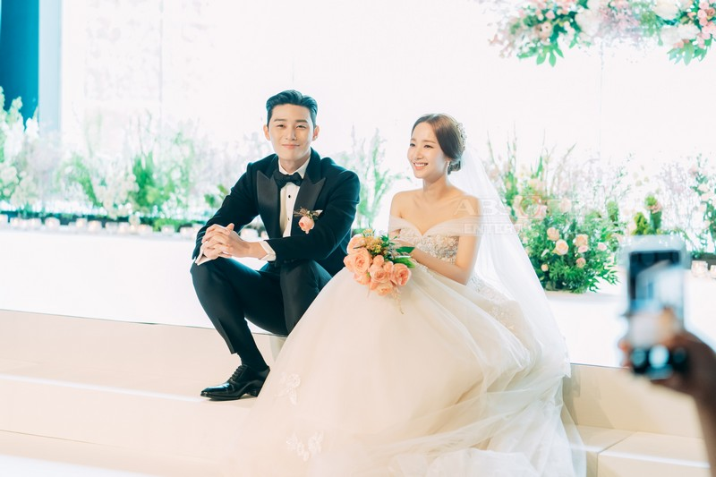

What's Wrong With Secretary Kim

MDL Rating : 8.5/10
Personal Preference : 9/10
Released Year : 2018
Genres: Friendship, Business, Comedy, Romance
Starring : Park Seo-joon, Park Min-young
The series revolves around the narcissistic Lee Young Joon, the vice president of a company run by his family. He is very self-absorbed and thinks highly of himself, so much that he barely acknowledges the people around him. Lee Young Joon has a capable and patient secretary Kim Mi So who has remained by his side and worked diligently for 9 years without any romantic involvement. However, Mi So now wants to set her life & focus on herself so when she decides to resign from her job, hilarious misunderstandings ensue. After 9 years of their strictly-workplace relationship, can it now develop in something more?
